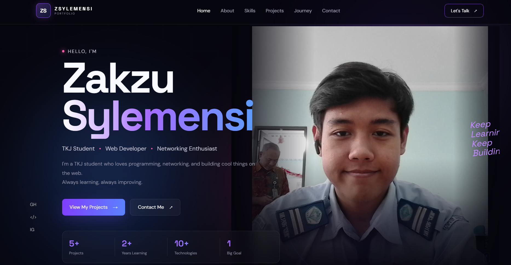
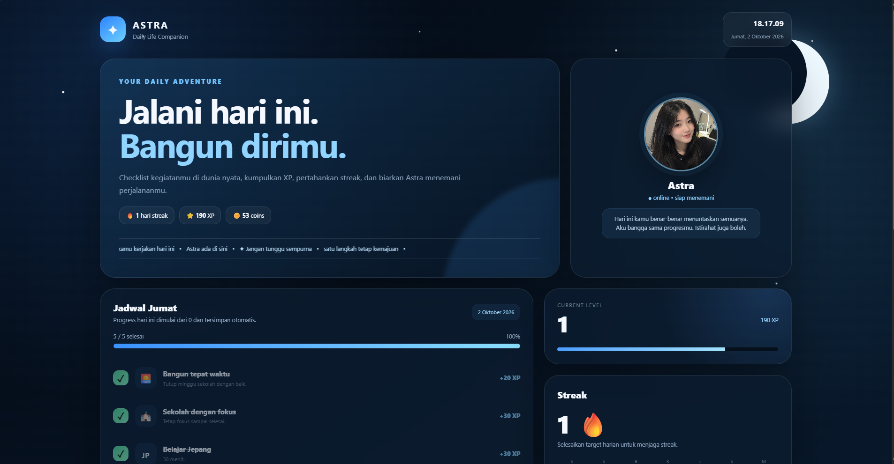

Membangun Kopdes
Game simulasi/management bertema koperasi desa yang sedang saya kembangkan menggunakan Unity. Project ini dibuat sebagai sarana belajar game development, UI, gameplay, dan programming.
Currently Learning / In DevelopmentPERSONAL PORTFOLIO · TECHNOLOGY & DEVELOPMENT
Rizki Badrur Ramadhan
|
Halo, Saya adalah siswa SMK 3 Perguruan Cikini dari jurusan Teknik Komputer dan Jaringan yang sedang mempelajari dunia teknologi, programming, game development, dan berbagai bidang digital.
Nama saya Rizki Badrur Ramadhan, siswa kelas XII TKJ A di SMK 3 Perguruan Cikini yang memiliki ketertarikan pada teknologi, programming, game development, dan pengembangan produk digital.
Saya sedang mengembangkan kemampuan di bidang teknologi melalui pembelajaran mandiri dan berbagai project kecil. Beberapa hal yang saya pelajari meliputi web development, game development, UI sederhana, serta pemanfaatan teknologi digital dan AI.
Saya masih berada dalam tahap awal perjalanan sebagai developer, tetapi saya percaya bahwa kemampuan dibangun melalui praktik. Karena itu, saya terus mencoba membuat project, mempelajari teknologi baru, dan memperbaiki hasil dari setiap project yang saya kerjakan.
Saat ini saya memiliki tujuan untuk terus berkembang di bidang teknologi dan membangun project yang tidak hanya menjadi latihan, tetapi juga dapat digunakan dan dikembangkan lebih lanjut.

Perjalanan saya di dunia teknologi dimulai dari rasa penasaran terhadap bagaimana komputer, website, dan game dapat dibuat. Seiring belajar, saya mencoba berbagai bidang dan menggunakan project kecil sebagai cara untuk memahami teknologi secara langsung.
Saya mulai dari mempelajari dasar HTML untuk memahami bagaimana struktur sebuah website dibangun.
Setelah memahami struktur website, saya mulai mempelajari CSS, layout, responsive design, dan cara membuat tampilan website menjadi lebih menarik.
Saya kemudian mulai mengenal JavaScript untuk memahami bagaimana website dapat memiliki interaksi dan fungsi yang lebih dinamis.
Ketertarikan saya pada game membuat saya mulai mencoba game development dan mempelajari konsep dasar seperti gameplay, UI, dan mekanik sederhana.
Saya mencoba menerapkan pembelajaran tersebut melalui Roblox Studio dengan membuat map, platform, checkpoint, dan mekanik sederhana.
Dalam proses belajar, saya banyak memanfaatkan AI sebagai learning assistant untuk membantu memahami kode, mencari solusi ketika mengalami error, dan mengeksplorasi teknologi yang belum saya pahami.
Di luar programming, saya juga mempelajari bahasa Jepang secara mandiri, mulai dari Hiragana, Katakana, kosakata, hingga pola kalimat dasar.
Ke depannya, saya ingin lebih banyak membangun project sendiri, memperkuat pemahaman programming, dan mengembangkan kemampuan di bidang web serta game development. Saya juga ingin terus meningkatkan kemampuan bahasa Jepang sebagai bagian dari persiapan untuk membangun karier di bidang teknologi di Jepang.
Titik hanya menunjukkan tahap belajar (1 = baru mulai, 2 = mulai terbiasa), bukan tingkat keahlian.
Game simulasi/management bertema koperasi desa yang sedang saya kembangkan menggunakan Unity. Project ini dibuat sebagai sarana belajar game development, UI, gameplay, dan programming.
Currently Learning / In Development
Project game Roblox sederhana yang saya buat untuk belajar Roblox Studio, level design, checkpoint, platform, dan scripting.
Learning Project
Website portfolio personal yang dibuat untuk mempelajari HTML, CSS, JavaScript, responsive design, dan UI.
Live Demo Learning Project
Music player berbasis web untuk memutar dan mengelola koleksi musik secara lokal dengan tampilan modern, interaktif, dan responsif.
Live Demo Personal Project
Website produktivitas berbasis game yang membantu pengguna mengatur jadwal dan membangun kebiasaan melalui sistem level, XP, streak harian, serta jam real-time dalam tampilan yang interaktif dan menarik.
Live Demo Personal ProjectProject yang akan datang selanjutnya
Sebagai siswa Teknik Komputer dan Jaringan, saya mempelajari dasar-dasar komputer, jaringan, troubleshooting, dan teknologi informasi.
TKJ memberikan saya dasar untuk memahami bagaimana komputer dan jaringan bekerja, sekaligus melatih saya untuk terbiasa mencari solusi ketika menghadapi masalah teknis.
Selain pembelajaran di sekolah, saya juga tertarik mengeksplorasi bidang lain seperti programming, web development, game development, dan teknologi digital. Menurut saya, TKJ menjadi salah satu fondasi yang membantu saya memahami dan terus berkembang di dunia teknologi.
Teknologi dan tools di atas merupakan beberapa teknologi yang pernah saya gunakan dalam proses belajar dan mengembangkan project. Dalam prosesnya, saya juga memanfaatkan AI sebagai learning assistant untuk membantu memahami konsep, mencari solusi, dan mengeksplorasi teknologi baru.
Saya masih dalam perjalanan belajar dan selalu terbuka untuk mempelajari hal baru, berdiskusi tentang teknologi, atau mengembangkan project bersama.